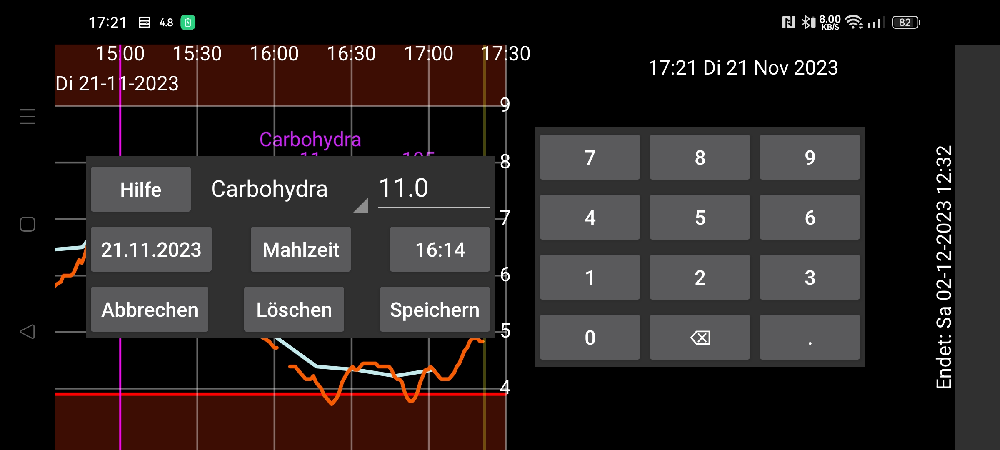

ar de es hi ja nl pl ru tr uz zh en
Mit „Neue Menge“ können Sie mit einem Etikett verknüpfte Zahlen eingeben. Sie können Etiketten im linken Menü→Einstellungen→Zahlenetiketten festlegen . Die mit einem bestimmten Etikett eingegebenen Mengen werden in der durch das Etikett bestimmten Höhe in der Grafik angezeigt.
Sie können die Menge später durch langes Drücken ändern. Sie können es auch aus der Liste der eingegebenen Mengen unter Menü links in der Mitte→Liste auswählen.
Es ist auch möglich, Insulindosisdaten vom NovoPen® 6 oder NovoPen Echo® Plus durch Scannen des NFC-Stifts zu empfangen. Nach dem Scannen können Sie ändern, unter welches Etikett die Dosen in Juggluco gespeichert werden, und die Dosen auf Dosen beschränken, die nach einem bestimmten Datum und einer bestimmten Uhrzeit erfolgen. Wenn im Speicher des Stifts Hunderte von Dosen vorhanden sind, kann es mehr als 30 Sekunden dauern, bis sie alle über NFC von Juggluco empfangen werden.
Einige Blutzuckermessgeräte können Blutzuckermessungen an Juggluco senden. Siehe linkes Menü → Einstellungen → Daten austauschen → Blutzuckermessgeräte
Unter Linkes Menü->Einstellungen->Zahlenetiketten wird außerdem festgelegt, unter welches Etikett Sie die Kohlenhydrate einer Mahlzeit eingeben. Unter „Neue Menge“ wird für diese Bezeichnung die Schaltfläche „Mahlzeit“ angezeigt. Wenn Sie auf die Schaltfläche „Mahlzeit“ tippen, gelangen Sie zu einem Bildschirm, auf dem Sie eine Mahlzeit aus ihren Bestandteilen zusammenstellen können. Anschließend wird der Kohlenhydratgehalt berechnet oder Sie können den Kohlenhydratgehalt angeben und dann wird die benötigte Menge einer Zutat berechnet.
Ausschließen: Aktivieren Sie „Ausschließen“, damit Juggluco diese Blutzuckermessung von der Kalibrierung ausschließt, weil der Glukosespiegel steigt oder fällt oder der Sensor sich noch in der Aufwärmphase befindet.